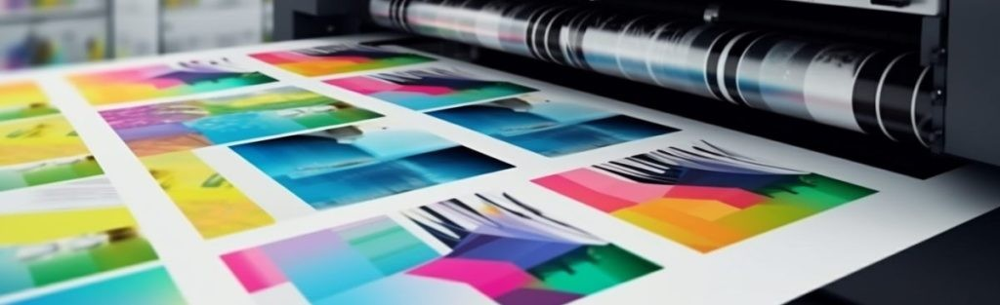
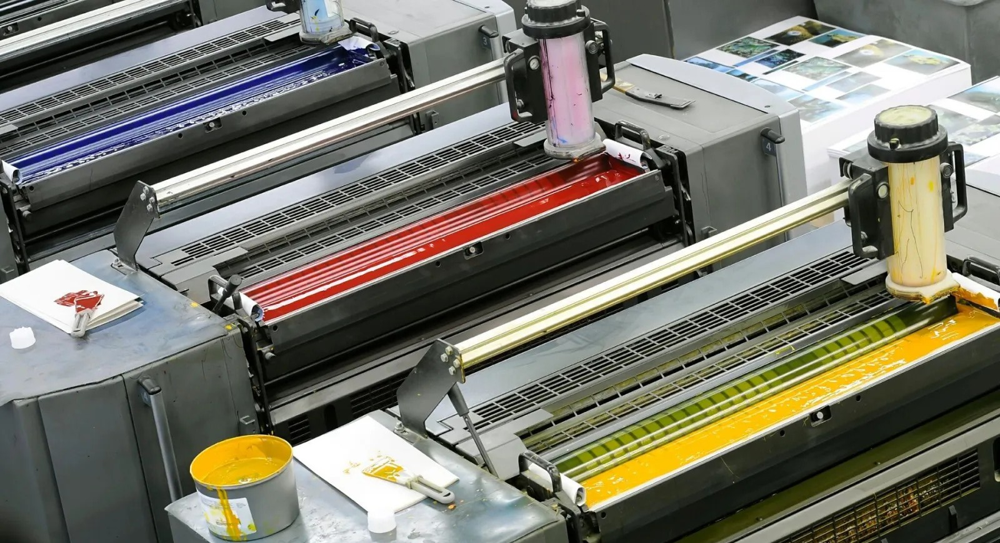
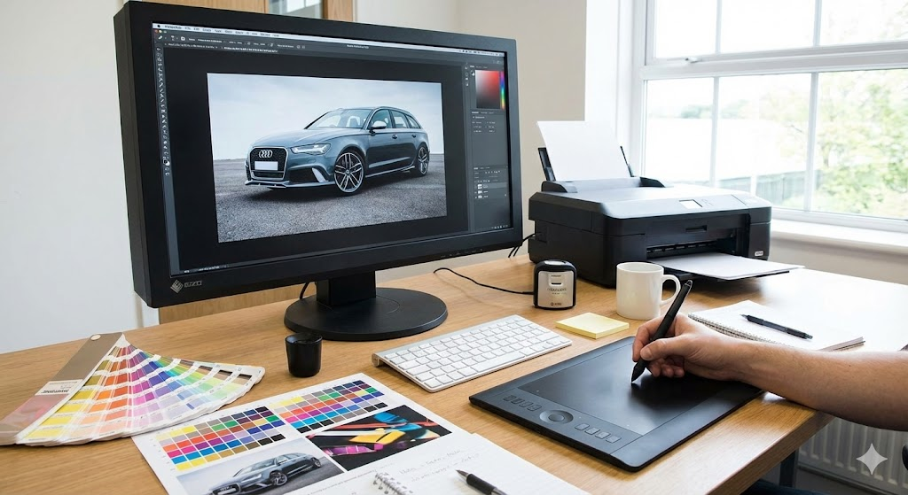

Màquines d'impressió offset de quatre colors amb control de qualitat avançat. La nostra tecnologia no només imprimeix, sinó que analitza. Gràcies als sistemes d'espectrofotometria en línia, la màquina llegeix constantment les barres de color de cada full.
Maquinària Offset
Màquines d'impressió offset de quatre colors amb control de qualitat avançat. La nostra tecnologia no només imprimeix, sinó que analitza. Gràcies als sistemes d'espectrofotometria en línia, la màquina llegeix constantment les barres de color de cada full.

Impressores digitals d'alta resolució per a tirades curtes i personalitzades. Aprofita el poder de la Dada Variable. A diferència dels sistemes tradicionals, la nostra tecnologia digital permet personalitzar cada full individualment dins d'un mateix tiratge.
Impressió Digital
Impressores digitals d'alta resolució per a tirades curtes i personalitzades. Aprofita el poder de la Dada Variable. A diferència dels sistemes tradicionals, la nostra tecnologia digital permet personalitzar cada full individualment dins d'un mateix tiratge.

Equipament de retoc fotogràfic i preimpressió per assegurar acabats professionals. El secret d'una impressió perfecta comença a la pantalla. El nostre equip de preimpressió realitza una verificació exhaustiva de cada arxiu
Retoc Fotogràfic
Equipament de retoc fotogràfic i preimpressió per assegurar acabats professionals. El secret d'una impressió perfecta comença a la pantalla. El nostre equip de preimpressió realitza una verificació exhaustiva de cada arxiu

Acabats
Maquinària d'acabat i enquadernació per a una presentació impecable dels materials. La qualitat no només es veu, també es toca. Oferim una gamma completa d'ennobliments per marcar la diferència: des de plastificats mat, brillant o soft-touch (tacte vellut), fins a vernissos UVI selectius i estampacions metàl·liques (stamping).